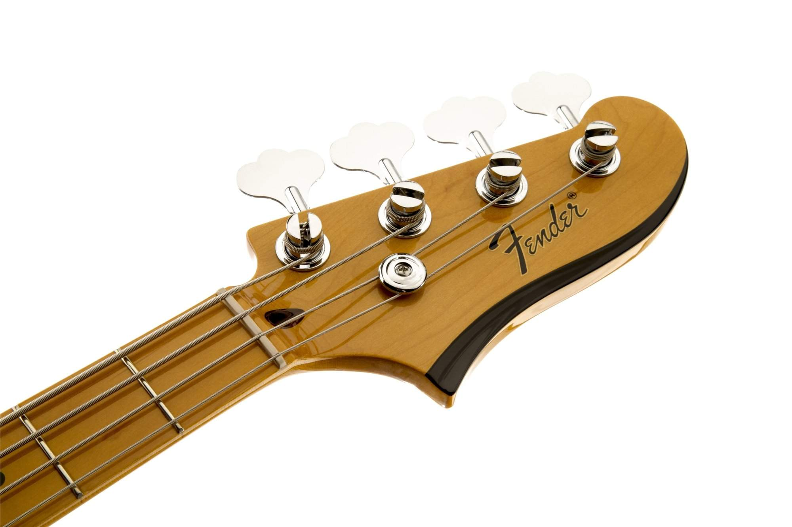
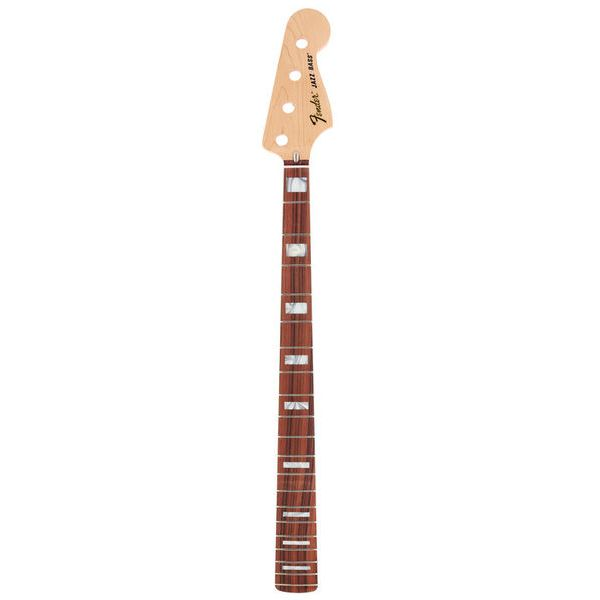
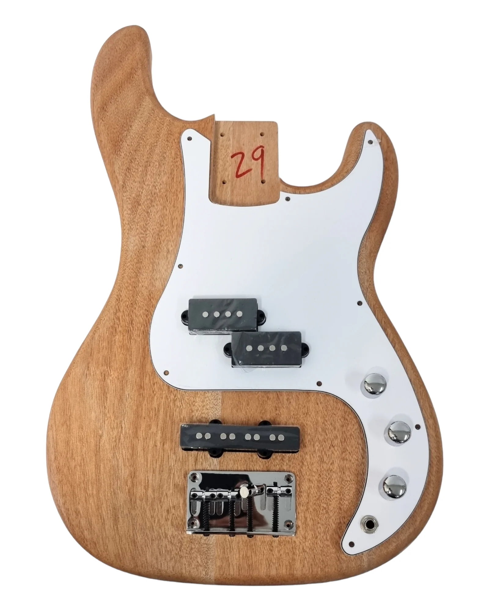

A bass is an instrument in the guitar family. It is the lowest-pitched from this family. It can often be confused with guitar purely based on looks, yet it has 4 strings instead of 6. Generally the instrument is 118cm tall, 30cm wide, and 6cm in depth. It roughly weighs about 5kg.
The bass is spilt into 3 sections, the body, neck, and head. We will cover their componets and what they do one by one.
Head:

Tuners are the mechanism that are used to change the pitch of the individual stings on the instrument. They are made of metal and use gears to turn large movements to minor adujustments.
The Nut, each of the strings fit on to this plastic piece to keep them in the same place
Sometimes, the 2 highest strings slip out of the nut, so we have the string tree to stop them from popping out. This is also made of metal.
Neck:

The neck itself is at the back of the fretboard, which aren't the same thing. The neck is usually 1 solid piece of maple or mahogany (type of wood).
The fretboard is glued to the top of the neck, it's a thin slice of wood with can determine the tone and feel of the instrument.
The frets are metal wires that divide the board up into specific notes so that the player can tell where to put their finger to make a sound on the instrument. The Fender Sonic Precision Bass has 20 frets.
In between the Fretboard and neck, theres something called a Truss Rod, its a big metal pole the can change how the neck is curved. If adjusted incorrectly, it can lead to a horribly sound quality with buzzing sounds and other unpleasant tones.
Inlays are fret markers that can help players nevigate the fret board so that they don't have the count the frets each time the play a note, made out of practically anything, mostly plastic and anything the contratst the colour of the fretboard.
Body:

Body is made of wood, and has most of the electronics. It's also where you would play the strings.
The strap buttons are used to hook the strap onto the bass.
Scratch plate, is a plastic sheet used to stop players from accidently scrathing the body's finish when playing.
The pickups, probably the most complicated part of the instrument. They are made of plastic with magnets inserted into them with a coil wire wrapped around them. When the magnets are disturbed by the strings, they pick up vibrations and convert into electricity.
The bridge and saddle are both made of metal, the saddle is adjustable to move the bass strings around, higher or lower, as well as from side to side. The bridge is where the strings connect to the body.
The volume and tone knobs are used to change the volume and tone of the instrument. Some basses have multiple, while others may only have a master volume. The Fender Sonic Precision Bass has 2 knobs, master volume, and master tone.
The output jack, made of metal. It's a plug for the bass cable for the sound.
The cutaway isn't really a part of the bass, it's piece cut out of the body so your hand can reach the higher frets.
The neck pocket is where the neck goes into the body.
Misc:
The bass cable (also known as a lead) is made of a coppper interior to carry the electricity. It also has a casing on the outside which can be anything from rubber to a thick, tough fabric.
The amplifier, generally a speaker with knobs that can change the tone and volume of the instrument entirely. These can come in many shapes and sizes but mainly consists of speakers, knobs, and a plastic casing (sometimes made with metal).
And finally, the strings. There are many ways they can be put together, but most commonly they have a center string which is usually nylon, which then is wrapped by a steel wire.
How does the instrument make sound?
When picked, the strings vibrate, in which the pickups convert that vibration into an electrical signal, which is then outputted through the output jack and carried along a bass cable which goes into and amplifier which produces the sound. The tone can be changed by using the knobs on the amplifier and body itself. This can make it sound extremely different to what you started with. It also depends on the instrument itself. some basses have a softer sound, while others have a deeper and more sharper one.
The range:
Specifically on the The Fender Sonic Precision Bass, the pitch range is from E1 to D#4, spanning almost 3 octaves across the entire fretboard.
Other basses may be different as it depends on the length of the fretboard and tuning.